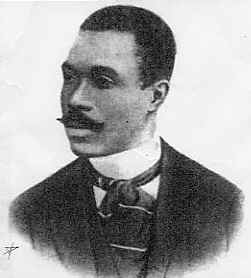
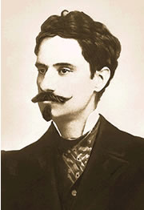
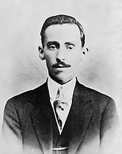

Simbolismo
Simbolismo é um movimento literário da poesia e das outras artes que surgiu na França, como oposição ao realismo, ao naturalismo e ao positivismo da época.
Movido pelos ideais românticos, estendendo suas raízes à literatura, aos palcos teatrais, às artes plásticas
Principais Poetas
Cruz e Sousa

O Cisne Negro
Alphonsus Guimarães

O Solitário de Mariana
Augusto dos Anjos

Doutor Tristeza